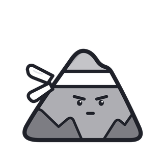

Focus Crew
Focus CrewMeet your Focus Crew
Five tiny companions that help you put your phone down, block distracting apps and actually get things done.

Focus timer with a friend. Start a session and your companion focuses with you, on the Lock Screen, in the Dynamic Island and next to your Mac's notch.
Real app blocking. Built on Apple's Screen Time. Block apps, categories and websites during focus sessions or on a schedule.
Progress you can see. Streaks, weekly charts, badges and a bond level with your companion that grows every time you focus.
Private by design. No account, no ads, no tracking. Your data stays on your devices.